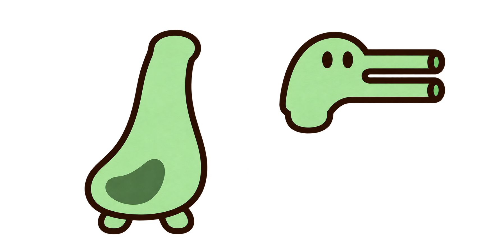

同贴纸小怪风格：SNIPER双眼长嘴，RAIL双眼双轨；同一软身、腹斑与双脚配同一刚性头炮，避免不同整身透视图切换造成造型跳变。这两张是正式AI分层重构原画，不能称旧稿直接切图。
验收范围：Root R03/R06真实组合、连续扫角局部通过；R07真实近场发射局部通过。完整来源/特殊出生边界与生产接入仍待主审。攻击诚实复用neutral，不伪称独立攻击原帧。未采用swivel试装不纳入本页正式来源。

原板alpha轮廓取边后确定性裁切；上颈纵向校准后统一重采样。Q动作只对腹部来源行作取样，头炮和脚保持原像素。封闭接口仅在真实另层填充重叠处作alpha遮挡，完整来源外描边保留；不程序画绿块/轮廓补缝。运行软颈网格映射也只采样真实来源纹理。
原板/原参考/请求SHA与裁切链 · 16运行层SHA与consumer · 原实际处理脚本（历史重播，请仅在隔离目录运行） · 隔离重播16项SHA精确一致 · 实际renderer组合与扫角验收 · 实际offense/出生/首轨迹验收